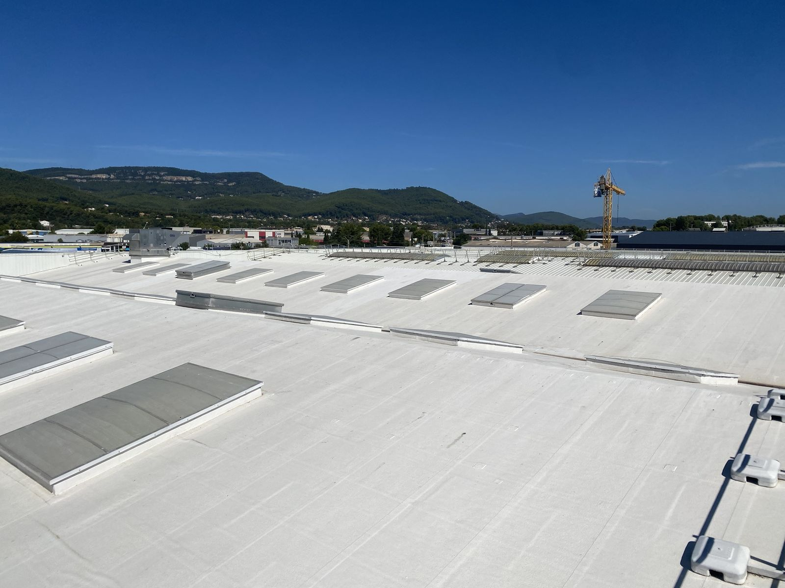
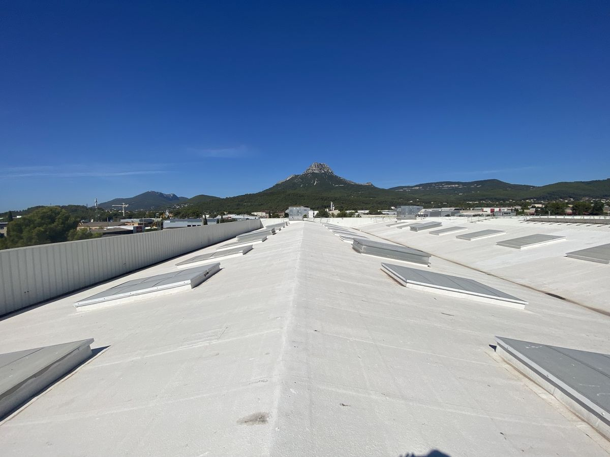
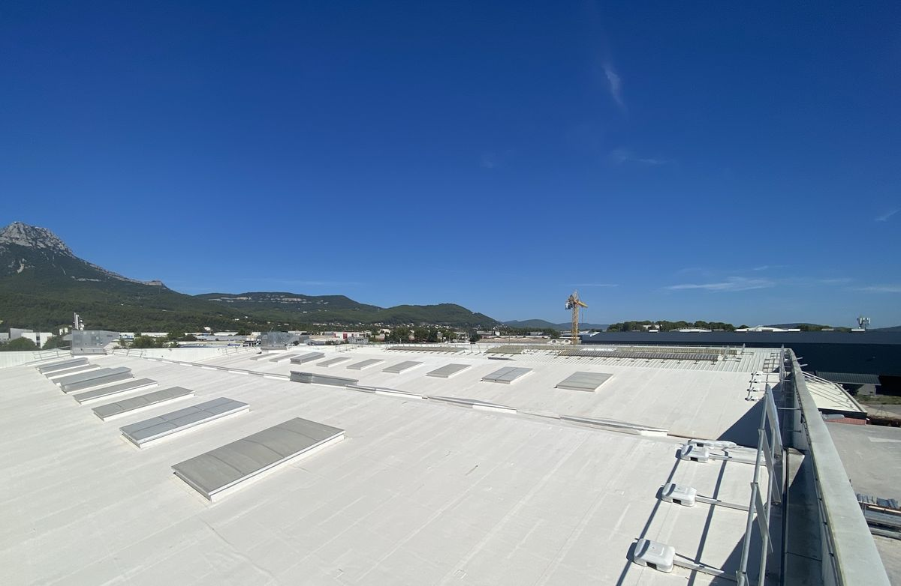

Cool roofing dans le Var.
Application de revêtements réflectifs sur toitures, de Toulon à Narbonne. Le cool roofing (ou cool roof, toiture blanche) renvoie jusqu'à 85 % du rayonnement solaire et limite la surchauffe des bâtiments, sans travaux lourds ni interruption d'activité.

Stopper la chaleur à la source.
En plein été, une toiture sombre peut atteindre 70 °C. Cette chaleur traverse l'isolant et s'accumule dans les volumes : inconfort des occupants, baisse de productivité, climatisation à pleine charge.
Le revêtement réflectif renvoie le rayonnement solaire avant sa transformation en chaleur. La température de surface chute, les niveaux sous toiture redeviennent exploitables et la consommation de climatisation diminue.
Les travaux sont réalisés par l'extérieur, sans interruption de votre activité. Dans le Var, l'Hérault et l'Aude, où les périodes de forte chaleur s'allongent, c'est l'une des solutions les plus rentables pour améliorer le confort d'été.
Bâtiments concernés
- Sites industriels
- Entrepôts et logistique
- Surfaces commerciales
- Bureaux et tertiaire
- Bailleurs sociaux
- Copropriétés
- Établissements publics
- Écoles

Une méthode en trois étapes.
Un interlocuteur unique, du diagnostic à la réception des travaux.
- Diagnostic
Visite technique gratuite sous 15 jours : état des supports et relevés sur site. Devis détaillé remis sous une semaine.
- Préparation
Nettoyage de la toiture, traitement anti-algues, puis application d'un primaire d'accroche adapté au support.
- Application
Deux couches croisées de 250 g/m² de revêtement réflectif blanc. Chantier sécurisé et propre, activité maintenue.
Réalisation : toiture d'entrepôt.
Une grande toiture traitée en peinture réflective blanche : surface entièrement couverte, lanterneaux et garde-corps préservés.

Simulez vos économies.
Renseignez la surface et le type de votre toiture pour obtenir une première estimation, mise à jour en direct.
Estimation indicative, établie à partir de la fiche technique Enercool et de résultats mesurés en saison chaude. Le chiffrage définitif est réalisé après visite technique.
Demander une étude gratuiteLe revêtement : Enercool Sunprotect.
Mateos Peinture est applicateur du réseau Enercool. Le Sunprotect est une peinture acrylique en phase aqueuse fabriquée en France, associant un pigment réfléchissant les infrarouges à des charges isolantes en aérogel de silice.
| Réflexion solaire | 0,85ASTM E903-12 |
|---|---|
| Émissivité thermique | 0,89ASTM C1371-15 |
| Indice de réflexion solaire (SRI) | 107105 après 4000 h |
| Conductivité thermique | 0,096 W/mK |
| Élongation | > 300 %suit la dilatation |
| Classement au feu | Broof(t3)rapport CSTB |
| NF EN 1062-1 | E4V2W3A1imperméable, respirant |
| Vieillissement accéléré | 500 h QUVsans jaunir ni craqueler |
| COV | < 5 g/l |
Supports compatibles
Bac acier, zinc, aluminium et polycarbonate ; membrane bitumineuse, béton, tuiles, ardoises et fibrociment ; membranes PVC, TPO et EPDM. Pente de toit d'au moins 3 %, sans zone de stagnation d'eau.
Stable aux UV, résiste à l'humidité, aux huiles et aux salissures.
Côté environnement
25 % de matières recyclées (carbonate de calcium issu de coquilles d'œufs françaises), sans résine fluorée, seaux en plastique recyclé, nettoyage à l'eau.
Valeurs issues du descriptif technique Enercool Sunprotect PAE (mai 2024). Les gains de température et de climatisation varient selon le bâtiment.
Questions fréquentes.
Cool roof, toiture blanche, peinture réflective : l'essentiel avant de lancer votre projet.
Qu'est-ce que le cool roofing, ou cool roof ?
Le cool roofing consiste à appliquer sur une toiture un revêtement blanc réflectif, aussi appelé peinture thermo-réflective ou toiture blanche. Il renvoie jusqu'à 85 % du rayonnement solaire, ce qui limite l'échauffement de la toiture et du bâtiment.
Quels types de toiture peut-on traiter ?
Bac acier, zinc, aluminium, polycarbonate, membrane bitumineuse, béton, tuiles, ardoises, fibrociment, ainsi que les membranes PVC, TPO et EPDM. La pente doit être d'au moins 3 %, sans zone de stagnation d'eau.
Combien de temps dure une toiture blanche ?
Le revêtement Enercool Sunprotect résiste aux UV, à l'humidité et aux salissures. Après vieillissement accéléré, son indice de réflexion solaire reste à 105 (107 à neuf), sans jaunissement ni craquelure.
Faut-il arrêter l'activité pendant les travaux ?
Non. L'application se fait entièrement par l'extérieur, sans intervention dans les locaux. Votre activité continue normalement pendant le chantier.
Quel gain de température peut-on attendre ?
En moyenne −5 °C de température intérieure, jusqu'à −8 °C en pic, et −29 % de consommation de climatisation mesurés en saison chaude. Le gain réel dépend du bâtiment : il est estimé lors de la visite technique.
Intervenez-vous dans ma ville ?
Nous intervenons de Toulon à Narbonne : Var, Bouches-du-Rhône, Gard, Hérault et Aude. La liste détaillée des villes figure sur la page zones d'intervention.